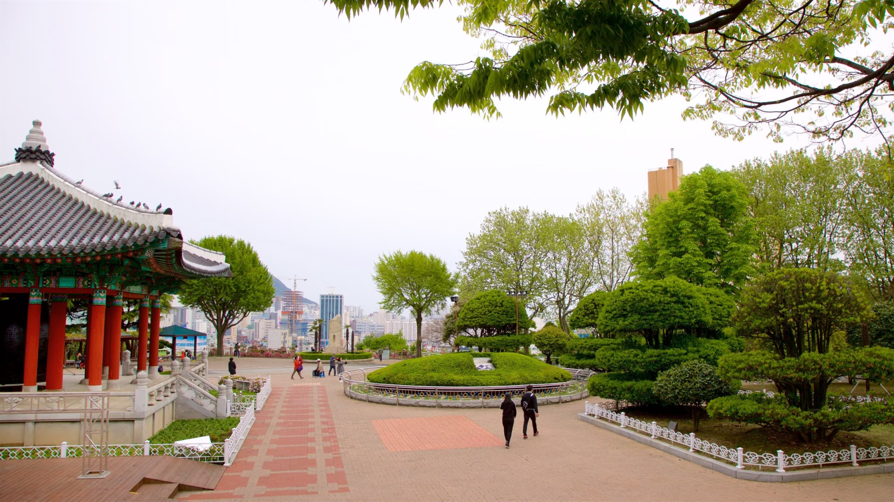

Find out 3 unmissable places in Busan
There are many different things to do in Busan. From centenaries Buddhist temples builded on the mountains and in the litoral cities where you can discover imaculated beaches with cristal clear water. In these litoral cities there are many things to do over the year. Families can spend time on the aquarium by the seaside, buyers can explore the vibrant neighbourhood and the nature lovers can enjoy long walks to the panoramic observatories. The Buddhist sanctuaries over the mountains and by the seaside in Busan has an impressive architecture letting photographers very excited.

1. Temple Haedong Yonggungsa
The Buddhist Haedong Yonggungsa Temple is located in the extreme Northeast of Busan. Created in 1376, it is one of the fewest temples in Korea builded by the seaside. By the East side you can enjoy the view of the sea and in the opposite side you can see the radiant mountains.
Good for:
- History

2. Temple Beomeo-sa
Beomeo-sa Temple is one of the biggest South Korea's sanctuaries. It is located on the edge top east of Geumjeongsa mountain and is far from the busy city. The Daeungjeopn Hall in the temple is a well-preserved example of Joeson Dinasty architecture.
Good for:
- History

3. Park Yongdusan
The Yongdusan park located in the central area of Busan hold some of the most important monumments in the city. You can appreciate the spectacular views from the top of Busan Tower a 120 meter high. There are two museums in the park. Check the tradiotional music instruments in the Museum of World Folk Instruments and more than 80 Korea's sailboats in the Exhibition Hall of World Model Boats.
Good for:
- Couple
- Family
- Budget
The best things to do in Busan shows how good is the reputation of this city as an important seaport in Asia. Often known as the essence of South Korea, you will discover an unique atmosphere in terms of ethinic and cultural diversity as this city welcome cosmopolitan public all the year.